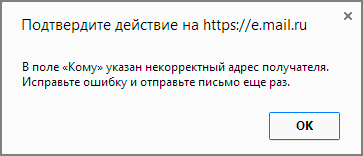
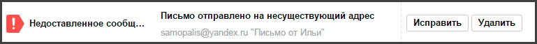
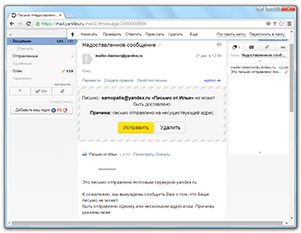
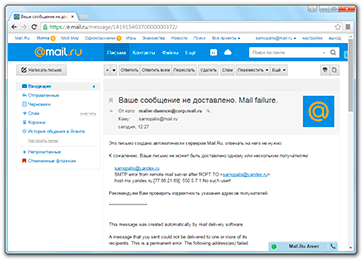
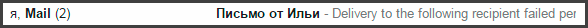
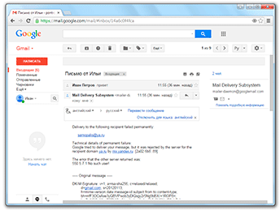

Почему не отправляются письма и что делать
Несмотря на все преимущества электронной почты, нередко при отправке писем возникают сложности. То письмо не отправляется, то доставить его до адресата почта не может. Попробуем разобраться, из-за чего могут возникать подобные проблемы и как с ними бороться.
Некорректный адрес электронной почты
Самая частая причина проблем с отправкой писем – это ошибка в адресе ящика (поле «Кому»). Хотя обычно пользователь думает на что угодно, но только не на это.
Если Вы пропустите или напечатаете хотя бы одну «не ту» букву в названии почты, письмо доставлено не будет!
В лучшем случае, об этом сразу же сообщит почтовый сайт, то есть появится соответствующая надпись, и письмо Вы отправить просто-напросто не сможете.
Но может быть и по-другому: письмо отправляется, но потом приходит уведомление, что оно не было доставлено (см. Недоставленное сообщение).
А есть третий вариант: письмо «уйдет» по адресу, но не по тому, который нужен. Это самое неприятное, потому как Вы можете об этом даже не узнать.
Например, мне нужно отправить письмо на адрес samopalis@gmail.com
Но при печати я случайно пропускаю одну букву в имени. Получается не samopalis@gmail.com, а samopali@gmail.com.
Если я не замечу ошибку и отправлю это письмо, то оно в лучшем случае не будет доставлено и мне сразу же придет уведомление об этом.
А в худшем случае мое сообщение все-таки отправится, но попадет к другому человеку. К кому-то, у кого есть ящик с названием samopali@gmail.com
Частые ошибки
Самые частые ошибки в адресе, из-за которых возникают проблемы с отправкой и доставкой:
- Лишние точки и пробелы в адресе.
- Недопустимые знаки (двоеточие, скобки, точка с запятой и др.).
- Имя вместо адреса (например, Иван Иванович вместо samopalis@gmail.com).
Еще одна из частых ошибок - неправильно напечатанный почтовый сайт (часть после знака @). То есть если вместо части yandex.ru напечатать yandeks.ru или просто yandex (без .ru), то письмо доставлено не будет. И опять же мы об этом можем даже не узнать.
Вот как правильно пишутся самые популярные почтовые сайты:
- gmail.com
- yandex.ru
- mail.ru
- bk.ru
- inbox.ru
- bing.com
- rambler.ru
Недоставленное сообщение
В том случае, если почта не смогла доставить Ваше письмо, то она об этом сообщает в специальном уведомлении.
Происходит это так: через какое-то время после отправки приходит письмо, в котором по-русски или по-английски написано, что Ваше сообщение не было доставлено.
Вот как оно выглядит в Яндекс.Почте:
 А так – в Mail.ru:
Так – в Gmail.com:
 Таким образом почта сообщает нам, что отправка не удалась – письмо никто не получил.
Бывает это по двум причинам:
1. Адрес не существует
Это означает, что такого адреса не существует в природе. Возможно, он был удален, а, может, Вы допустили ошибку при печати.
Довольно часто бывает так, что когда Вам оставляли адрес электронной почты, его случайно указали с ошибкой. То есть ошибку допустили даже не Вы, а тот, кто его оставил.
2. Ящик недоступен
Недоступен – это значит, что он работает, но по каким-то причинам сейчас не может принять почту.
Обычно это бывает из-за переполненности. То есть писем в ящике слишком много и для новых просто нет места. В этом случае получатель должен удалить хотя бы одно-два письма из ящика.
Другая причина: проблемы с почтовым сайтом. То есть сайт, на котором находится ящик, перестал работать. Обычно это временное явление, которое проходит в течение нескольких часов.
Что делать. Самостоятельно определить, что именно произошло, невозможно. Поэтому если приходит такое уведомление, нужно просто повторить отправку спустя какое-то время.
Если и повторная отправка не удалась, то тут уж ничего не поделаешь – придется каким-то другим способом связываться с получателем.
Как избежать проблем с отправкой и доставкой почты
По статистике самая частая причина проблем с доставкой почты это неверно указанный адрес. То есть, по сути, виноват не тот, кто получает письмо, а тот, кто его пишет.
Поэтому Вы должны быть очень внимательны не только при печати адреса в поле «Кому», но и в процессе его «получения».
Если Вам, например, диктуют адрес по телефону, не стесняйтесь уточнить, правильно ли Вы поняли ту или иную букву. Желательно, конечно, получить его в текстовом виде, а не стараться понять на слух (по смс, через социальную сеть и т.д.).

Также следует помнить, что у адресов электронной почты есть определенный синтаксис. То есть имеется, так сказать, набор правил, по которым формируется каждый адрес ящика в интернете.
- Любой адрес состоит только из английских букв, цифр и некоторых знаков (точка, дефис, нижнее подчеркивание). Никаких русских букв!
- В нем не может быть пробелов.
- В нем всегда есть знак @ (примерно посередине) и этот знак всего один.
- После знака @ всегда идет название какого-то сайта. И в этом названии всегда есть точка, после которой еще несколько английских букв (например, mail.ru, gmail.com).
- Точка в конце адреса не ставится.
Желательно, конечно, запомнить эти правила. Тогда ошибка «Некорректный адрес электронной почты» возникать у Вас не будет.